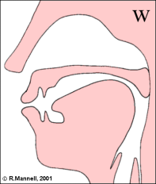
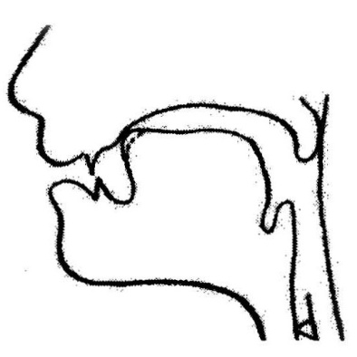
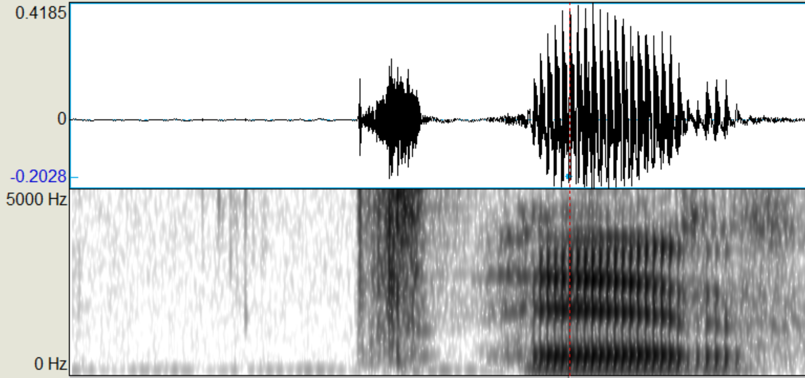

Составили: студенты 4 курса кафедры фонетики и методики преподавания иностранных языков Морсковатых М. С. и Сиверцева Э. А. под руководством Н. Б. Вольской (2016)
Редактор: П. А. Холявин (2023)
В консонантной системе аварского языка существует 44 различительные единицы (фонемы):
Аппроксиманты (щелевые сонорные) – сонорные согласные, аналогичные по способу образования фрикативным согласным, но без образования шума.
Согласный /w/ — лабиовелярный аппроксимант. На письме обозначается как «в». Данный согласный имеет два фокуса (или сужения): первый фокус — между губами, а второй — между задней частью спинки языка и мягким небом. При его произнесении язык приближается к мягкому небу, а губы принимают округлую форму. Данный аварский согласный схож с английским /w/ (как в словах wear, water, walk и т.д.)
NB: В аварской речи могут также появляться аллофоны данного губно-губного согласного: [v] — звонкий губно-зубной спирант и губно-зубной аппроксимант [ʋ].
1. Сравните: [w] – [v]
2. Прослушайте и повторите:
Начало слова:
| ва | /wa/ | ‘и (союз)’ | |
| вац | /wat͡s/ | ‘брат’ | |
| вабаъ | /waˈbaʔ/ | ‘холера’ | |
| вахӏ | /waħ/ | ‘увы’ | |
| веги | /ˈweɡi/ | ‘лежание’ | |
| вегьи | /weˈhi/ | ‘приход’ | |
| вехь | /wex/ | ‘пастух’ | |
| вигъи | /wiˈʁi/ | ‘распятие’ | |
| вилизе | /ˈwilize/ | ‘исчезать’ | |
| воси | /ˈwosi/ | ‘(от гл. восизе)’ |
Середина слова:
NB: другая интерпретация этих сочетаний — огубленные согласные (/kʷ/, /χʷ/ и т.д.).
| квачӏ | /kwat͡ʃ’/ | ‘лапа’ | |
| квар | /kwar/ | ‘верёвка’ | |
| хвезе | /ˈχweze/ | ‘умирать’ | |
| бакквей | /baˈk͡xːwej/ | ‘затмение солнца’ |
Конец слова:
| къелав | /ˈq͡χ’ːelaw/ | ‘спорящий’ | |
| беццав | /ˈbet͡sːaw/ | ‘слепой (сущ.)’ |
Аффрикаты — согласные, при артикуляции которых смычка переходит в щель того же места образования.
Ца – ццин – цӏа – цӏцӏай
/t͡s – t͡sː – t͡s’ – t͡s’ː/
Различительными для данных согласных являются следующие признаки:
Согласный /t͡s/ [t͡sʰ] — переднеязычная глухая краткая придыхательная аффриката. На письме обозначается как «ц». Данный аварский согласный произносится как русский, однако аварский звук отличается наличием придыхания, т.е. шума, производимого трением выдыхаемого воздуха о сближенные, но не сомкнутые голосовые связки. Чтобы правильно произнести данный звук, следует сопроводить его артикуляцию достаточно резким и интенсивным выдохом.
Аффрикаты, в отличие от взрывных, после раскрытия смычки завершаются щелевой фазой. Смычка образуется между передней частью спинки языка и верхними зубами (артикуляция смычки совпадает с артикуляцией взрывного твердого /t/, затем она переходит в щель, характер которой такой же, как и при образовании щелевого /s/.
NB: Стоит отметить, что придыхание является собственной характеристикой глухих неабруптивных согласных, но не является смыслоразличительным признаком.
Согласный /t͡s:/ — переднеязычная глухая долгая (интенсивная) придыхательная аффриката. На письме обозначается как «цц». Артикуляция данного звука совпадает с артикуляцией предыдущего, только звук произносится более длительно и интенсивно.
1. Сравните: /t͡s/ – /t͡sː/
2. Долгота имеет фонологическую значимость. Сравните:
| цин | /t͡sin/ | ‘раз, однажды’ | |
| ццин | /t͡sːin/ | ‘гнев’ |
3. Прослушайте и повторите:
| ца | /t͡sa/ | ‘зуб’ | |
| цин | /t͡sin/ | ‘раз, однажды’ | |
| цо | /t͡so/ | ‘один’ | |
| цер | /t͡ser/ | ‘лиса’ | |
| бецари | /beˈt͡sari/ | ‘косьба’ | |
| баци | /ˈbat͡si/ | ‘закрытие’ | |
| къец | /q͡χ’ːet͡s/ | ‘спор’ | |
| вац | /wat͡s/ | ‘брат’ | |
| ццин | /t͡sːin/ | ‘гнев’ | |
| ццури | /ˈt͡sːuri/ | ‘опухоль’ | |
| бецц | /bet͡sː/ | ‘слепо’ | |
| беццаб | /ˈbet͡sːab/ | ‘слепой’ | |
| бецци | /ˈbet͡sːi/ | ‘молиться’ | |
| рецц | /ret͡sː/ | ‘мольба’ | |
| ицц | /ʔit͡sː/ | ‘родник’ |
Согласный /t͡s’/ — переднеязычная глухая краткая абруптивная аффриката. На письме обозначается как «цӏ». Артикуляция данного звука совпадает с артикуляцией /t͡s/, за исключением того, что этот согласный эйективный (абруптивный). Поток воздуха образуется за счет быстрого движения гортани вверх при закрытой голосовой щели.
1. Сравните: /t͡s/ – /t͡s’/
Абруптивность – неабруптивность имеет фонологическую значимость. Сравните:
| ца | /t͡sa/ | ‘зуб’ | |
| цӏа | /t͡s’a/ | ‘огонь’ | |
| цер | /t͡ser/ | ‘лиса’ | |
| цӏер | /t͡s’er/ | ‘лёд, стекло’ |
Согласный /t͡s’ː/ — переднеязычная глухая долгая абруптивная аффриката. На письме обозначается как «цӏцӏ». Артикулируется так же, как предыдущий согласный, но данный звук является более интенсивным и долгим.
1. Сравните: /t͡s’/ – /t͡s’ː/
2. Прослушайте и повторите:
| цӏа | /t͡s’a/ | ‘огонь’ | |
| цӏер | /t͡s’er/ | ‘лёд, стекло’ | |
| цӏил | /t͡s’il/ | ‘хрящ’ | |
| цӏуна | /ˈt͡s’una/ | ‘заполненный’ | |
| бецӏаб | /ˈbet͡s’ab/ | ‘тёмный’ | |
| бацӏи | /ˈbat͡s’i/ | ‘ковка’ | |
| мацӏ | /mat͡s’/ | ‘язык’ | |
| бацӏ | /bat͡s’/ | ‘волк’ | |
| бецӏ | /bet͡s’/ | ‘темно’ | |
| цӏцӏай | /t͡s’ːaj/ | ‘прополка’ | |
| цӏцӏал | /t͡s’ːal/ | ‘кнут’ | |
| бацӏцӏин | /baˈt͡s’ːin/ | ‘чистка’ | |
| нуцӏцӏа | /nuˈt͡s’ːa/ | ‘дверь’ | |
| пицӏцӏ | /pit͡s’ː/ | ‘смола’ |
Чехь – ччехӏ – чӏер – чӏчӏел
/t͡ʃ – t͡ʃː – t͡ʃ’ – t͡ʃ’ː/
Согласный /t͡ʃ/ [t͡ʃʰ] — альвеолярная глухая краткая придыхательная аффриката. На письме обозначается как «ч». Похож на соответствующий русский согласный, однако характеризуется придыханием. Смычка образуется между передней частью спинки языка и верхними зубами и твердым нёбом. Щелевая фаза такая же, как при артикуляции /š'/.
Согласный /t͡ʃː/ — альвеолярная глухая долгая (интенсивная) придыхательная аффриката. На письме обозначается как «чч». Отличается от предыдущего звука длительностью и интенсивностью.
1. Сравните: /t͡ʃ/ – /t͡ʃː/
2. Долгота имеет фонологическую значимость. Сравните:
| бача | /baˈt͡ʃa/ | ‘облако’ | |
| баччи | /ˈbat͡ʃːi/ | ‘запас’ |
3. Прослушайте и повторите:
| чан | /t͡ʃan/ | ‘охота’ | |
| чехь | /t͡ʃex/ | ‘живот’ | |
| бача | /baˈt͡ʃa/ | ‘облако’ | |
| бече | /beˈt͡ʃe/ | ‘телёнок’ | |
| къеч | /q͡χ’ːet͡ʃ/ | ‘жажда’ | |
| нич | /nit͡ʃ/ | ‘стыд’ | |
| ччим | /t͡ʃːim/ | ‘ягнёнок’ | |
| ччехӏ | /t͡ʃːeħ/ | ‘скот’ | |
| баччи | /ˈbat͡ʃːi/ | ‘запас’ | |
| беччи | /ˈbet͡ʃːi/ | ‘брожение’ | |
| речч | /ret͡ʃː/ | ‘табак’ |
Согласный /t͡ʃ’/ — альвеолярная глухая краткая абруптивная (эйективная) аффриката. На письме обозначается как «чӏ». Данный согласный произносится с твердым приступом.
1. Сравните: /t͡ʃ/ – /t͡ʃ’/
2. Абруптивность имеет фонологическую значимость. Сравните:
| чан | /t͡ʃan/ | ‘охота’ | |
| чӏар | /t͡ʃ’ar/ | ‘сорняк’ |
Согласный /t͡ʃ’ː/ — альвеолярная глухая долгая абруптивная аффриката. На письме обозначается как «чӏчӏ».
1. Сравните: /t͡ʃ’/ – /t͡ʃ’ː/
2. Прослушайте и повторите:
| чӏар | /t͡ʃ’ar/ | ‘сорняк’ | |
| чӏер | /t͡ʃ’er/ | ‘попкорн’ | |
| бачӏин | /baˈt͡ʃ’in/ | ‘приезд’ | |
| бечӏай | /beˈt͡ʃ’aj/ | ‘увядание’ | |
| чӏор | /t͡ʃ’or/ | ‘стрела’ | |
| мачӏу | /maˈt͡ʃ’u/ | ‘кремень’ | |
| мачӏ | /mat͡ʃ’/ | ‘бедро’ | |
| чӏчӏеп | /t͡ʃ’ːep/ | ‘корзина’ | |
| чӏчӏел | /t͡ʃ’ːel/ | ‘заканчивать’ | |
| бечӏчӏи | /ˈbet͡ʃ’ːi/ | ‘доение’ | |
| мачӏчӏад | /maˈt͡ʃ’ːad/ | ‘откормленный бык’ | |
| мичӏчӏ | /mit͡ʃ’ː/ | ‘крапива’ |